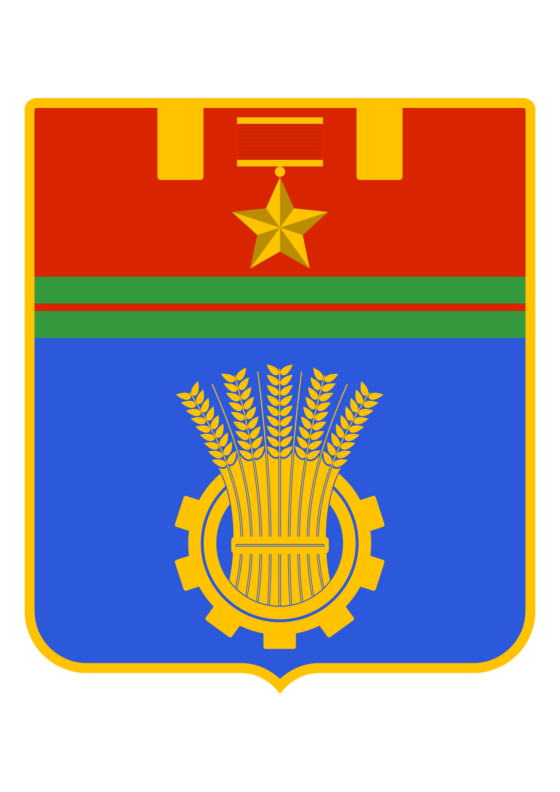
Волгоград

Храмы и церкви
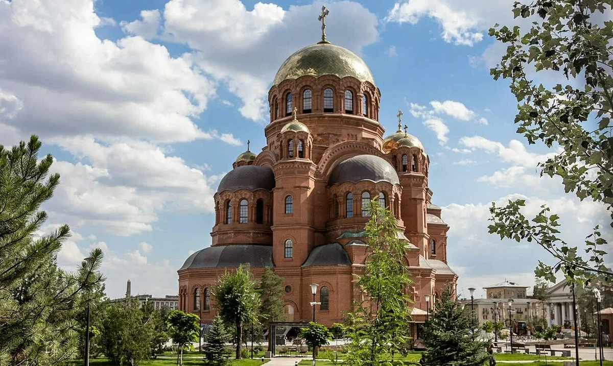
Кафедральный собор Александра Невского
Собор Святого благоверного князя Александра Невского является восстановленной копией главного храма дореволюционного Царицына. Первый камень в основание собора был заложен в 1901 году на народные пожертвования в честь чудесного спасения императора Александра III в железнодорожной катастрофе 1888 года. Строительство продолжалось 15 лет, и в мае 1918 года храм был освящен. Для малоэтажного Царицына 50-метровый собор стал настоящим исполином и архитектурной доминантой. В 1932 году храм был взорван. Спустя десятилетия было принято решение о его возрождении: в 2016 году началось строительство, и уже в сентябре 2021 года воссозданный собор был торжественно освящен Святейшим Патриархом Кириллом.
С архитектурной точки зрения собор является ярким образцом неовизантийского стиля. Его отличает массивный центральный купол, который с трех сторон окружают полукупола, а между ними возвышаются четыре колокольни. Интерьер собора поражает своим великолепием: помещения облицованы мрамором, украшены искусной резьбой и библейскими росписями, выполненными, в том числе, по эскизам знаменитого художника Васнецова. Этот двухъярусный храм, вмещающий до двух тысяч прихожан, был воссоздан с максимальной точностью по архивным фотографиям и сегодня вновь является духовным центром Волгограда.
Адрес: г. Волгоград, площадь Павших Борцов, 9
Особенности: Кафедральный собор, действующий храм
Телефон: +7 (903) 377-20-46
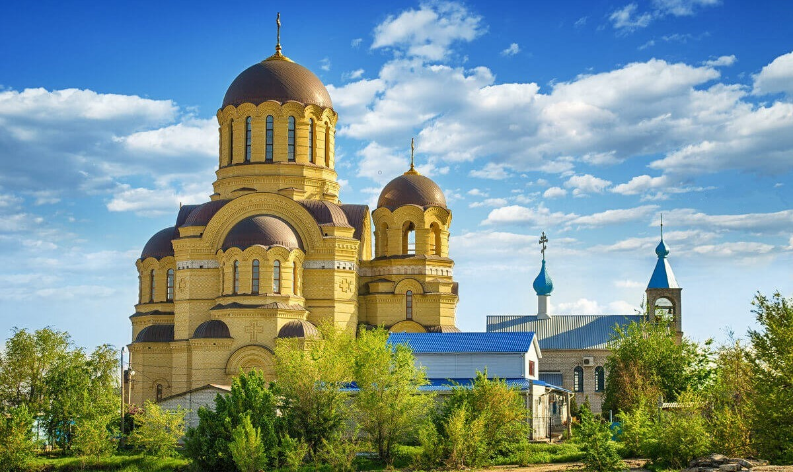
Храм Иоанна Кронштадского
Приход храма святого праведного Иоанна Кронштадтского был основан в 1991 году, а уже в 1993-м строящийся храм посетил патриарх Алексий II. С 1996 года приход является подворьем Свято-Троицкого Белогорского монастыря. Рядом с первым небольшим зданием в 2001–2012 годах был возведён новый двухъярусный храм, способный вместить до тысячи человек.
Главная архитектурная особенность — русско-византийский стиль с высотой более 50 метров, длиной 42 метра и толщиной стен до полутора метров. В основе плана заложен крест, а аркатурный пояс из натурального камня символизирует единство Церкви.
Адрес: г. Волгоград, ул. Туманяна, 38
Особенности: Действующий храм, проводятся богослужения
Телефон: +7 (8442) 73-09-91
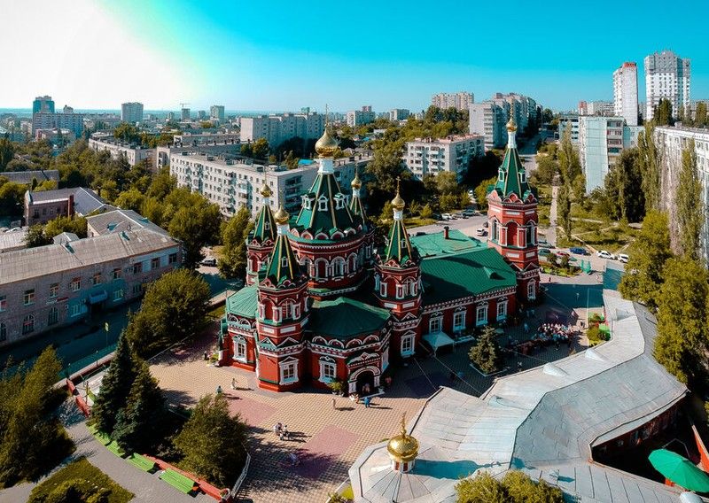
Казанский кафедральный собор
Казанский кафедральный собор был построен в 1899 году в псевдорусском стиле и является одним из старейших храмов Волгограда. В советское время его закрыли и переоборудовали под хлебозавод, а во время Сталинградской битвы здание сильно пострадало, уцелели лишь стены. Восстановленный после войны, в 1954 году он получил статус кафедрального собора.
Главная архитектурная особенность — крестообразная форма и шатровые купола, возвращённые храму в ходе реставрации 2005–2011 годов. Среди святынь выделяются иконы с частицами мощей Александра Невского, Николая Чудотворца и святителя Луки Крымского.
Адрес: г. Волгоград, ул. Липецкая, 10
Особенности: Кафедральный собор, исторический храм
Телефон: 8 (8442) 94-78-43
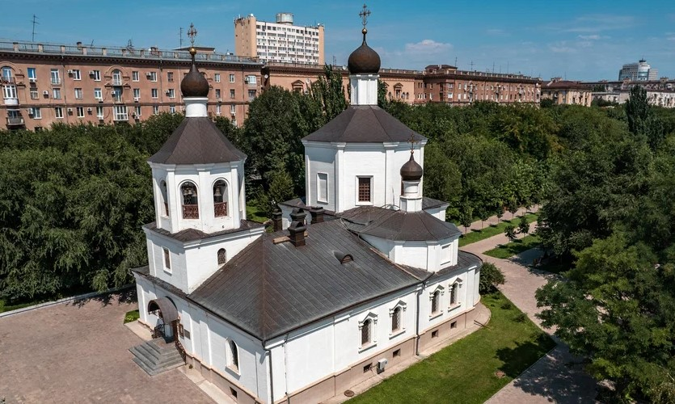
Храм Иоанна Предтечи
Храм Иоанна Предтечи — Это старейший православный храм Волгограда, ведущий свою историю от первой деревянной церкви, поставленной при основании крепости Царицын в 1589 году. В конце XIX века на её месте возвели каменный храм, который после разорения и закрытия в советское время вновь открылся сразу после Сталинградской битвы. С 1943 по 1954 год он был единственным действующим в городе и носил статус кафедрального собора, пока эту роль не вернули восстановленному Казанскому собору.
Главная особенность храма в том, что в его стенах молились, несмотря на военную разруху, практически непрерывно с 1943 года — с этого момента богослужения не прекращались даже в самые тяжёлые послевоенные годы. Архитектура относится к русско-византийскому стилю, а внутреннее убранство бережно сохраняет исторический облик.
Адрес: г. Волгоград
Особенности: Действующий храм
Телефон: +7 (8442) 33-74-70
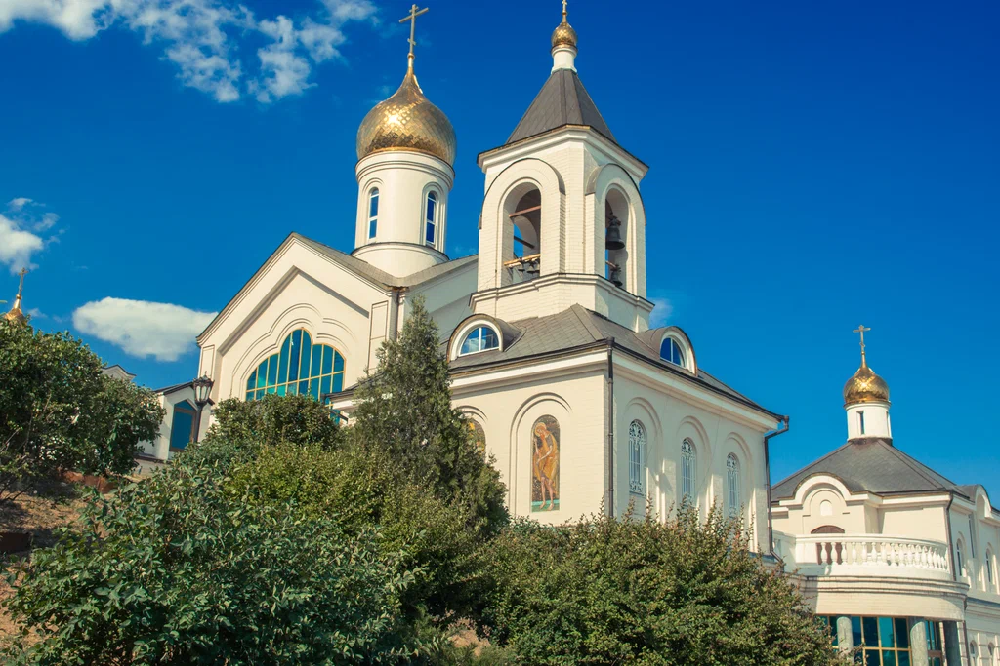
Храм Сергия Радонежского
Храм преподобного Сергия Радонежского в Волгограде, расположенный на улице Ткачева, — это возрождённая святыня с непростой судьбой. Изначально каменный храм на этом месте существовал с 1908 года и был закрыт советской властью в 1932 году. В годы Великой Отечественной войны его здание уцелело, что позволило в конце 1990-х годов провести масштабную реконструкцию. Новый храм по проекту архитекторов В.Ф. Ечина, В.Ю. Кормильца и других был построен в период с 1996 по 1999 год.
Среди главных особенностей храма — особая атмосфера уюта на ухоженной закрытой территории. Приход ведёт активную просветительскую работу: здесь действует воскресная школа, есть церковная лавка и даже небольшое кафе с домашней выпечкой. Особо почитаемой святыней является частица мощей святителя Николая Чудотворца, официально переданная храму на хранение.
Адрес: г. Волгоград, ул. Ткачева, 1
Особенности: Действующий храм, открыт для посещения
Телефон: +7 (8442) 36-82-17
Памятники и мемориалы
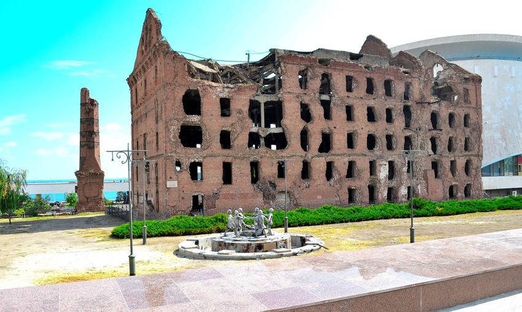
Мельница Гергардта и «Детский хоровод»
Мельница Гергардта — это не просто руины, а один из главных символов непобежденного Сталинграда. Она была построена в 1900 году поволжским немцем Александром Гергардтом и на тот момент считалась одним из самых технологичных предприятий города: пятиэтажное здание имело мощный железобетонный каркас, собственную котельную и электрогенератор. В мирное время здесь не только мололи муку, но и пекли хлеб, производили масло и коптили рыбу, снабжая продукцией не только Царицын, но и столицу. В дни Сталинградской битвы прочное здание стало непреступной крепостью, выдержав 58 дней ожесточенных боев и бомбардировок. После войны его было решено не восстанавливать, а оставить в руинированном виде как памятник мужеству защитников города.
Главная особенность мельницы заключается в ее подлинности: красные кирпичные стены до сих пор хранят на себе выбоины от пуль и осколков. Это один из трех объектов в Волгограде, намеренно сохраненных в разрушенном состоянии. Сегодня руины являются частью музея-заповедника «Сталинградская битва», и посетители могут увидеть их снаружи, прочувствовав всю тяжесть тех событий. Рядом с мельницей расположены музей-панорама и знаменитый фонтан «Детский хоровод», что создает единый мемориальный комплекс.
Адрес: г. Волгоград, ул. Маршала Чуйкова, 47А
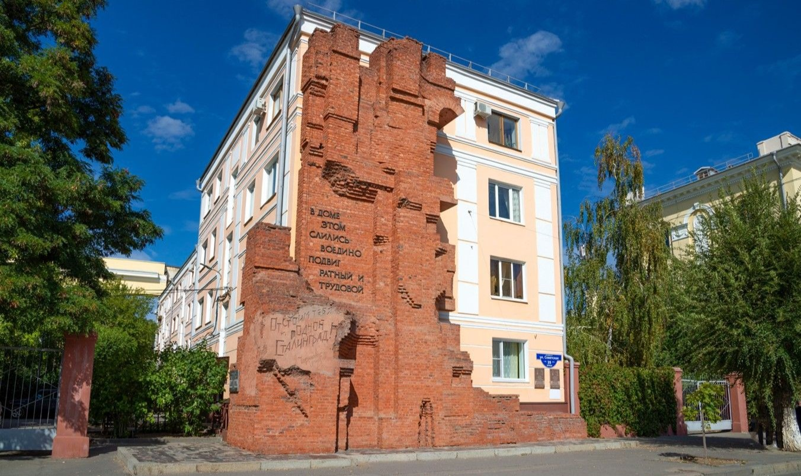
Дом Павлова
Дом Павлова — это легендарный жилой дом, ставший символом стойкости и воинского подвига. До войны это был престижный четырехэтажный дом для работников облпотребсоюза, но в 1942 году он превратился в неприступную крепость. Разведывательная группа под командованием сержанта Якова Павлова выбила немцев из здания, после чего в течение 58 дней гарнизон из 25 бойцов разных национальностей удерживал оборону, отражая бесконечные атаки противника. Этот небольшой плацдарм, отмеченный на личных картах Паулюса как настоящая крепость, так и не был сдан врагу.
Уникальность Дома Павлова в том, что он стал олицетворением не только ратного, но и трудового подвига: после войны его восстановили одним из первых, и сейчас в нем снова живут люди. На торцевой стене, обращенной к площади Ленина, установлена мемориальная плита, напоминающая о тех героических днях. Интересен и тот факт, что в подвале дома был проложен телефонный кабель, и связь с командованием не прерывалась даже в разгар сражений.
Адрес: г. Волгоград, ул. Советская, 39
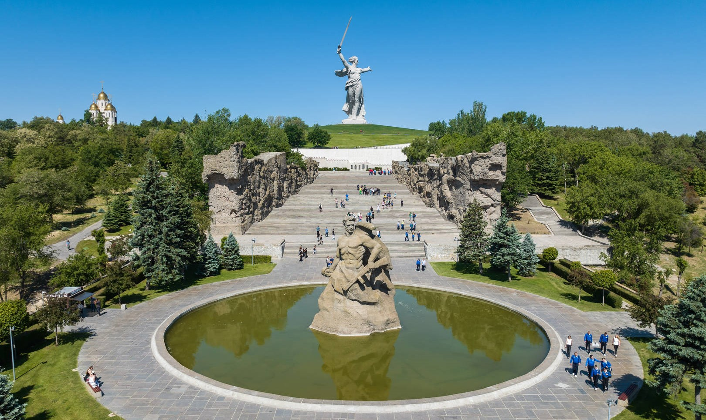
Мамаев курган
Мамаев курган — это возвышенность на правом берегу Волги, которая в годы Великой Отечественной войны стала ареной ожесточенных боев. Битва за эту стратегическую высоту, обозначенную на картах как «Высота 102,0», продолжалась 135 дней и унесла десятки тысяч жизней. После войны склоны кургана были буквально перепаханы металлом: на каждый квадратный метр приходилось до 1250 осколков, а земля долгое время оставалась мертвой. Увековечить память героев было решено созданием грандиозного мемориального ансамбля. Его строительство под руководством скульптора Евгения Вучетича и инженера Николая Никитина началось в 1959 году и длилось восемь лет. Торжественное открытие памятника-ансамбля «Героям Сталинградской битвы» состоялось 15 октября 1967 года.
Главная особенность мемориала — его глубоко продуманная драматургия и колоссальный масштаб. Маршрут от подножия к вершине включает 200 гранитных ступеней — по числу дней Сталинградской битвы — и проводит посетителя через череду знаковых объектов: вводную композицию «Память поколений», площадь «Стоявших насмерть», барельефы «Стен-руин» и Зал Воинской славы с Вечным огнем и почетным караулом. Доминантой ансамбля является 85-метровая скульптура «Родина-мать зовет!». Это уникальное инженерное сооружение: полая внутри статуя весом 8 тысяч тонн не вкопана в землю, а стоит исключительно за счет собственного веса, удерживаемая 117 натянутыми стальными тросами. В братских и индивидуальных могилах на территории кургана покоится прах более 34,5 тысяч защитников города.
Адрес: г. Волгоград, проспект им. В.И. Ленина
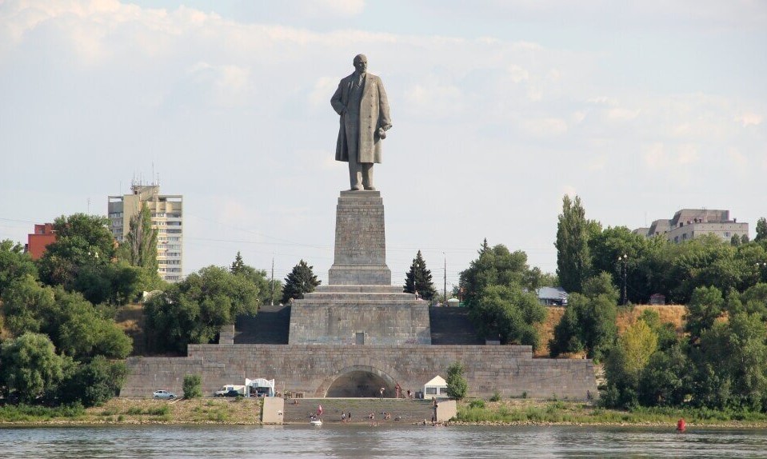
Памятник Ленину
Памятник Владимиру Ильичу Ленину, расположенный у входа в Волго-Донской судоходный канал, — это не просто монумент, а один из главных символов Волгограда и самая большая в мире скульптура, установленная реально жившему человеку. Он был торжественно открыт 20 апреля 1973 года, накануне 103-й годовщины со дня рождения вождя. Его создателями выступили знаменитый скульптор Евгений Вучетич (автор мемориала на Мамаевом кургане) и архитектор Леонид Поляков. Интересно, что этот монумент имеет уникальную предысторию: изначально, к моменту открытия канала в 1952 году, на этом же месте стоял гигантский памятник Иосифу Сталину. В ходе борьбы с культом личности в 1961 году его демонтировали, и долгое время постамент пустовал, пока власти не решили установить на нем фигуру Ленина.
Главная особенность монумента — его колоссальный размер и узнаваемый силуэт, который виден с большого расстояния с проплывающих по Волге теплоходов. Общая высота памятника составляет 57 метров: 27 метров — сама скульптура и еще 30 метров — гранитный постамент. Он занесен в Книгу рекордов Гиннесса как самый большой в мире памятник реальному человеку. Скульптор применил здесь ту же передовую технологию, что и при создании статуи «Родина-мать зовет!»: полая внутри фигура изготовлена из предварительно напряженного железобетона, укрепленного стальными тросами, что обеспечивает ей устойчивость и долговечность.
Адрес: г. Волгоград, ул. Фадеева, 35
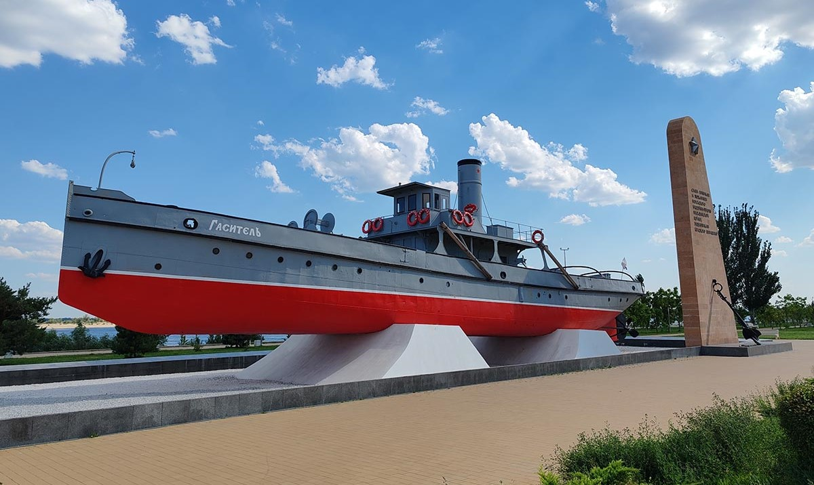
Пожарный катер «Гаситель»
Пожарный катер «Гаситель» — это не просто памятник, а настоящий ветеран двух войн, установленный на вечную стоянку в Волгограде. Он был построен в 1903 году на Сормовском заводе и до 1926 года носил имя «Царёв». Это был мощный и маневренный пароход, способный подавать до 95 тысяч ведер воды в час, что делало его незаменимым при тушении пожаров на Волге. В годы Гражданской войны он участвовал в обороне Красного Царицына, перевозил войска и боеприпасы. В период Сталинградской битвы «Гаситель» под непрерывным огнем противника тушил пожары на переправах, эвакуировал раненых и доставлял грузы, пока в октябре 1942 года не был потоплен, получив около 3,5 тысяч пробоин. После войны катер подняли, отремонтировали и продолжали использовать по назначению вплоть до 1966 года, после чего он был списан и затоплен.
Вторично жизнь «Гасителя» началась в 1977 году, когда в честь подвига речников и пожарных Волжского бассейна его было решено сделать центральным элементом мемориала, торжественно открытого 6 ноября того же года на берегу Волги в пойме реки Царицы. Автором проекта выступил народный архитектор СССР В. Е. Масляев. ' Главная особенность памятника — его композиционная целостность: катер установлен не просто на пьедестале, а в центре специально созданного гранитного бассейна, имитирующего водную гладь. Позади судна возвышается 13-метровая стела, облицованная базальтовыми плитами, с мемориальными надписями, прославляющими мужество волжских речников в битвах за Царицын и Сталинград.
Адрес: г. Волгоград, пойма реки Царицы (ориентир — пересечение ул. Калинина и 0-й Продольной магистрали)
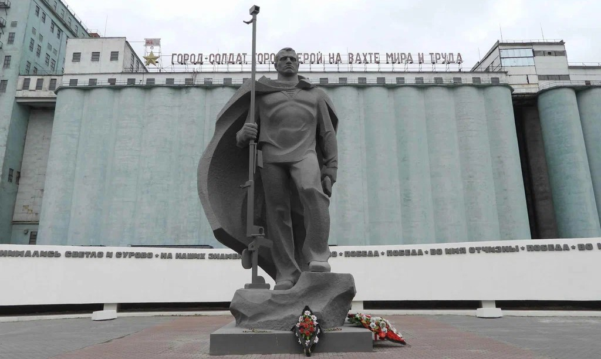
Волгоградский элеватор
Волгоградский элеватор — уникальный памятник истории федерального значения, который и сегодня продолжает работать по прямому назначению, оставаясь одним из немых свидетелей Сталинградской битвы. Построенный в 1941 году по типовому проекту треста «Хлебострой», он сразу стал архитектурной доминантой: в преимущественно малоэтажном довоенном Сталинграде махина элеватора была самым высоким зданием. Именно поэтому осенью 1942 года за него развернулись одни из самых ожесточенных боев в городской черте — контроль над высотой позволял просматривать центр города и подходы к Волге. Особенностью его обороны стало участие 92-й отдельной стрелковой бригады, сформированной из моряков-североморцев: в сухопутных схватках они использовали флотскую тактику стремительных контратак, наводя ужас на противника.
Захват элеватора дался немцам настолько тяжело, что для участников штурма был даже разработан специальный памятный нагрудный знак. В январе 1943 года советским войскам пришлось вновь выбивать врага из мощных железобетонных конструкций здания, которые превратили его в настоящую крепость. После войны элеватор был восстановлен и вновь введен в эксплуатацию. Сегодня на его территории установлен памятник защитникам, а на фасаде здания размещена мемориальная доска с текстом: «В дни Сталинградского сражения борьба за элеватор была особенно упорной и ожесточенной. Элеватор несколько раз переходил из рук в руки».
Адрес: г. Волгоград, ул. Козловская, 59
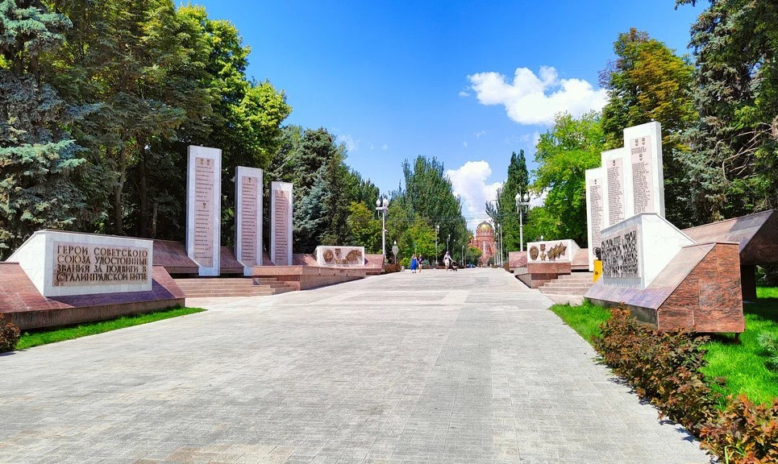
Аллея Героев
Аллея Героев — это парадный бульвар в центре Волгограда, соединяющий площадь Павших Борцов и набережную 62-й Армии. Торжественно открытая в 1954 году, она была заложена в память о подвиге советских солдат на месте трех небольших довоенных улочек. Протянувшаяся почти на 300 метров, аллея стала не просто оживленным променадом, но и важнейшим мемориалом, который часто называют «нулевым километром» и парадным входом в город со стороны Волги.
Архитектурный ансамбль Аллеи Героев, созданный Каро Алабяном, Ефимом Левитаном и Леонидом Гольдманом, является ярким образцом «сталинского ампира». По обеим сторонам бульвара возвышаются монументальные восьмиэтажные жилые дома. На крышах двух из них, обращенных к набережной, установлены макеты высших наград, которыми был удостоен город за победу в Сталинградской битве: ордена Ленина и медали «Золотая Звезда». Главный мемориал аллеи — это шесть белоснежных мраморных стел с именами 127 Героев Советского Союза, получивших это звание за подвиг в Сталинградской битве, а также 192 Героев-уроженцев области и 28 полных кавалеров ордена Славы. Завершается аллея монументальным обелиском у братской могилы, где с 1963 года горит Вечный огонь. Рядом с ним с 1965 года несет почетную вахту легендарный Пост № 1 — самый первый в Советском Союзе, через который за 60 лет прошли более 200 тысяч волгоградских школьников.
Адрес: г. Волгоград, Центральный район, Аллея Героев
Театры
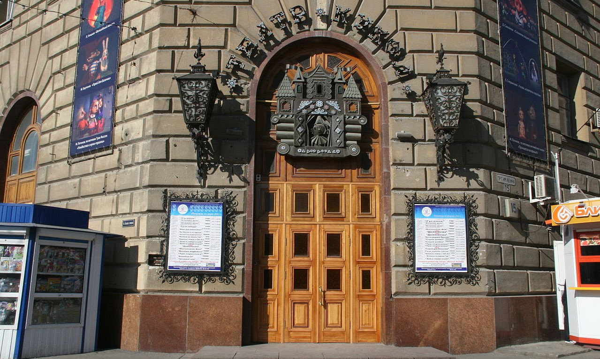
Волгоградский кукольный театр
Волгоградский областной театр кукол — один из старейших детских театров региона, ведущий свою официальную историю с 1937 года. Именно тогда самодеятельный кукольный коллектив, появившийся после гастролей театра Сергея Образцова, получил статус профессионального. Долгое время у труппы не было своего помещения, и спектакли играли на сцене ТЮЗа, в клубах и школах. Лишь в послевоенные годы, в сентябре 1956-го, театр обрел постоянный дом на проспекте Ленина, где открылся премьерой «Буратино», поразившей зрителей сочетанием живого и кукольного планов. Десятилетиями театр оставался верен своему призванию, ставя спектакли не только для детей, но и для взрослых, и активно гастролируя по стране и за рубежом.
Новая глава в жизни коллектива началась в декабре 2023 года, когда театр переехал в возрожденное здание бывшего кинотеатра «Победа» — памятник архитектуры царицынской эпохи, переживший войну и воссозданный в послевоенные годы архитектором Ефимом Левитаном. Масштабная реконструкция, длившаяся три года, превратила его в современный дворец детства, где гармонично сочетаются сталинский ампир и передовые технологии. В интерьерах сохранили изящную лепнину, массивные дубовые двери и хрустальные люстры, а сценическое пространство теперь включает три зала: главный на 240 мест, экспериментальный зал-трансформер для беби-постановок и зал-фойе на 100 мест. Особой «фишкой» стала выставочная экспозиция кукол из спектаклей прошлых лет, а в будущем здесь планируют создать музей и продолжить развивать инклюзивный театр для детей с ограниченными возможностями.
Адрес: г. Волгоград, ул. Коммунистическая, 1
Телефон кассы: 8-937-565-81-56
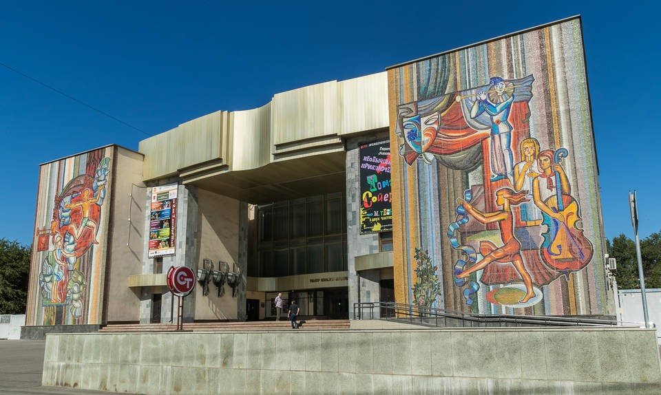
Волгоградский театр юного зрителя
Волгоградский ТЮЗ — один из старейших детских театров России, основанный в 1933 году как Сталинградский театр юного зрителя. В годы войны труппа была эвакуирована, но сразу после освобождения города, в 1944 году, театр возобновил работу, давая спектакли в неприспособленных помещениях. Настоящий дом ТЮЗ обрёл в 1970 году, когда переехал в специально построенное здание на улице Рабоче-Крестьянской. Этот архитектурный проект в стиле советского модернизма стал одной из ярких достопримечательностей города: белоснежное здание напоминает огромный круизный лайнер, «плывущий» по Волге. В репертуаре театра — классические и современные постановки для детей, подростков и взрослых; зрительный зал вмещает 425 человек.
Главная особенность ТЮЗа — необычный облик здания, которое давно стало узнаваемым символом Волгограда. Его остеклённые фасады, наклонные пилоны и открытая терраса создают ощущение лёгкости и движения. В 2020 году внутри провели масштабную реконструкцию, обновив сценическое оборудование и интерьеры, но сохранив исторический дух. Сегодня это не только театр, но и культурный центр, где проходят фестивали, творческие встречи и лаборатории. Особое внимание уделяется интерактивным спектаклям и проектам для семейной аудитории.
Адрес: г. Волгоград, ул. Рабоче-Крестьянская, 42
Телефон кассы: +7 (8442) 95-97-99
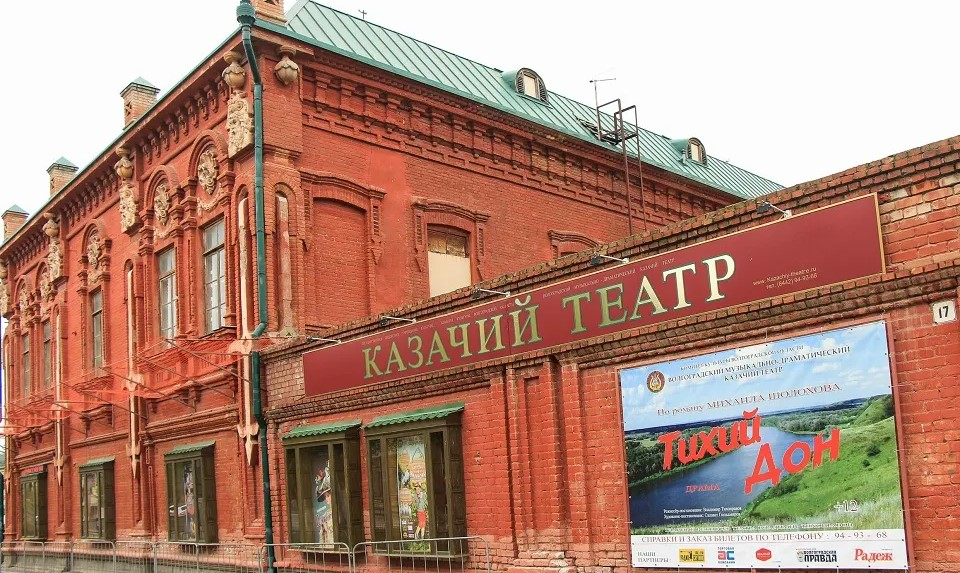
Волгоградский музыкально-драматический казачий театр
Волгоградский музыкально-драматический казачий театр, основанный в 1992 году, является уникальным культурным явлением, хранящим и развивающим традиции донского казачества. Театр был создан как Государственный Донской казачий театр, его основателем и первым художественным руководителем стал заслуженный артист России, коренной казак Владимир Ляпичев. С 2011 года учреждение носит свое нынешнее название. С самого начала главной задачей коллектива была и остается работа над произведениями казачьей тематики: первым спектаклем стала постановка "Я пришёл дать вам волю" о Степане Разине, а сегодня в репертуаре можно увидеть "Тихий Дон", "Донскую душу" и музыкальную программу "Музыка казачьей души".
Главной архитектурной особенностью театра является его историческое здание, построенное в 1862 году царицынским купцом Александром Шлыковым и признанное объектом культурного наследия. Это одно из самых загадочных и красивых строений города, выделяющееся богатым декором: фасады из красного кирпича украшены уникальной белоснежной лепниной и маскаронами — барельефами в виде человеческих лиц, изображающих, по городской легенде, дочь купца Шлыкова и его самого. Изначально здание выглядело иначе и имело угловую башню, делающую его похожим на замок, однако этот облик был частично утрачен при послевоенном восстановлении. За свою долгую историю дом успел побывать женской гимназией, педагогическим институтом, пережил ожесточенные бои во время Сталинградской битвы и долгое время служил горожанам как кинотеатр «Гвардеец», прежде чем в 1994 году обрел новую жизнь в качестве театра.
Адрес: г. Волгоград, ул. Академическая, д. 3
Телефон: +7 (8442) 94-93-68
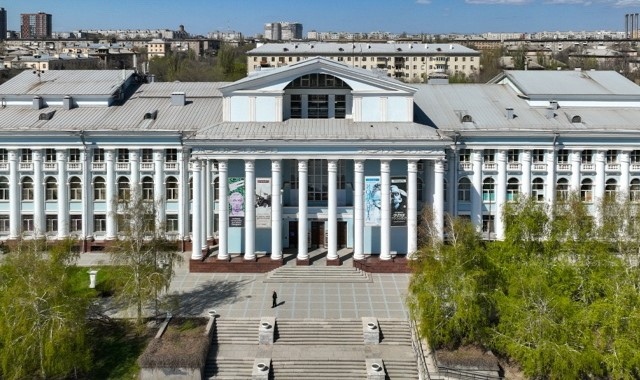
«Царицынская опера»
Волгоградский государственный театр «Царицынская опера» — один из ведущих музыкальных театров региона. Его история уходит корнями в начало XX века: оперные традиции города восходят к 1907 году, когда купец и меценат Владимир Миллер построил на берегу реки Царицы каменный театр «Конкордия» и открыл в нём первый оперный сезон. В 1930-е годы на базе «Конкордии» работал Сталинградский театр оперетты, но здание было разрушено в годы войны. Возрождение оперы началось в 1992 году с создания «Волгоградской оперной антрепризы» под руководством дирижёров Вадима Венедиктова и Эдуарда Серова. В 2004 году антреприза была преобразована в государственный театр «Царицынская опера», который возглавил первый директор Владимир Федерас.
Театр располагается в здании бывшего Дворца культуры имени Ленина, построенном в 1956 году по проекту архитектора Якова Корнфельда в стиле сталинского ампира. Оно является объектом культурного наследия и обладает уникальными акустическими характеристиками. Основной зал вмещает 449 зрителей. В репертуаре театра — классические оперы и балеты: «Евгений Онегин», «Лебединое озеро», «Тоска», «Щелкунчик», «Травиата», «Кармен» и многие другие. Ежегодно здесь проходит фестиваль искусств «Оперный альянс», собирающий ведущих вокалистов и музыкантов. «Царицынская опера» также активно работает с детской аудиторией и реализует социальные проекты, в том числе по повышению финансовой грамотности.
Адрес: г. Волгоград, пр. В. И. Ленина, 97
Телефон кассы: +7 (8442) 26-79-95
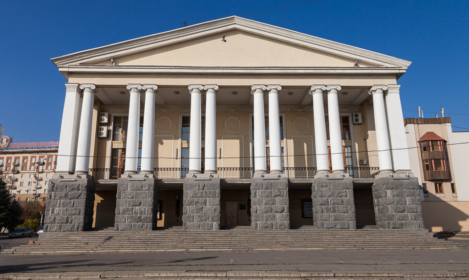
Волгоградский музыкальный театр
Волгоградский музыкальный театр — один из старейших музыкальных театров на Волге, который ведет свою историю с ноября 1932 года. Он был основан как Сталинградский театр музыкальной комедии и открыл свой первый сезон в здании театра «Конкордия» опереттой «Холопка». Театр быстро добился признания, представив в первом же сезоне 13 премьер и отправившись на гастроли в Москву, Киев и Харьков. В годы войны театр был эвакуирован в Казань и Омск, но сразу после победы под Сталинградом труппа вернулась в родной город, где, несмотря на разруху, продолжила давать спектакли в здании клуба тракторного завода. В 1952 году театр обрел свой нынешний дом — историческое здание бывшего Общественного собрания Царицына на Центральной набережной. В 1995 году театр получил статус музыкального.
Здание театра — памятник архитектуры с богатой историей. Оно было построено в 1903 году как клуб Общественного собрания для «высшего общества» Царицына. В 1909 году здесь состоялся концерт Ф.И. Шаляпина. После революции в здании формировались рабочие отряды и проходило первое собрание городской комсомольской организации. В дни Сталинградской битвы здесь размещалась морская бригада Волжской военной флотилии. Здание было разрушено, но уже в 1946 году одним из первых в городе восстановлено, а в 1960 году реконструировано по проекту архитекторов И. А. Куренного, И. Е. Фиалко и В. С. Макаренко. Сегодня театр — лауреат Государственной премии СССР (1972), а с 2023 года его возглавляет режиссер и телеведущий Александр Колесников.
Адрес: г. Волгоград, ул. им. Маршала Чуйкова, 4.
Телефон кассы: +7 (8442) 38-30-68.
Музеи Волгограда
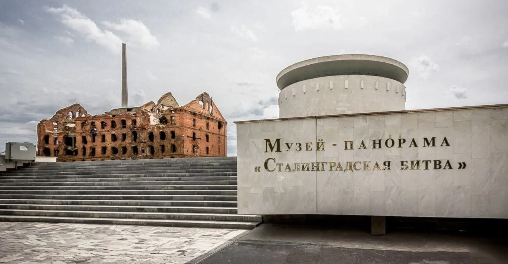
Музей-панорама «Сталинградская битва»
Музей-панорама «Сталинградская битва» - это не просто хранилище артефактов, а центральный элемент мемориального комплекса, посвященного одному из важнейших сражений XX века. Музей ведет свою историю с 1937 года, когда был основан Музей обороны Царицына. Однако современный комплекс был торжественно заложен 2 февраля 1968 года, в день 25-й годовщины разгрома немецко-фашистских войск под Сталинградом. Место для строительства было выбрано не случайно: именно здесь, на берегу Волги, в сентябре 1942 года высадилась 13-я гвардейская стрелковая дивизия генерала А. И. Родимцева, сыгравшая ключевую роль в обороне города. Строительство велось поэтапно, и полноценное открытие всего ансамбля состоялось 6 мая 1985 года, в канун 40-летия Великой Победы.
Архитектурный замысел комплекса, разработанный под руководством народного архитектора СССР В. Е. Масляева, уникален и полон символизма. Он построен на драматическом контрасте: на фоне темных, израненных осколками руин паровой мельницы Гергардта, специально сохраненной как памятник, устремляется ввысь светлое и словно парящее в воздухе здание музея. Его доминанта - панорамная ротонда в форме гиперболоида вращения, облицованная белым известняком и опирающаяся на четыре мощные опоры. Внутри ротонды находится главное сокровище музея — художественное полотно «Разгром немецко-фашистских войск под Сталинградом», которое является самым большим живописным полотном в России: его длина составляет 120 метров, а высота — 16 метров.
Помимо панорамы, в восьми экспозиционных залах и четырех диорамах разворачивается история великой битвы. Здесь, среди более чем 4000 экспонатов, представленных из богатейших фондов музея (насчитывающих около 170 тысяч единиц хранения), можно увидеть подлинные вещи, принадлежавшие легендарным участникам сражения. Среди наиболее ценных артефактов — почетный меч короля Великобритании Георга VI, преподнесенный в дар жителям Сталинграда. На открытой площадке у музея развернута постоянная экспозиция боевой техники времен войны, а весь ансамбль венчает устремленный в небо 76-метровый обелиск в форме штыка русской винтовки.
Адрес: г. Волгоград, ул. им. Маршала Чуйкова, 47
Телефон для заказа экскурсий: +7 (8442) 55-00-83.
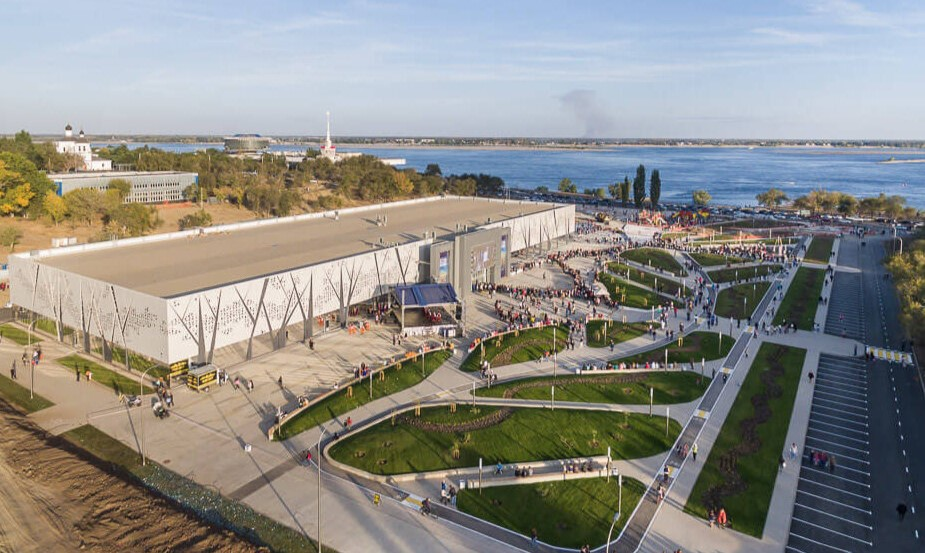
«Россия — моя история»
Исторический парк «Россия — моя история» в Волгограде — это не классический музей с витринами, а масштабный мультимедийный комплекс, где благодаря современным технологиям прошлое буквально «оживает». Его строительство всего за один год превратило заброшенный пустырь в пойме реки Царицы в благоустроенное общественное пространство, ставшее новым центром притяжения для горожан. Идея создания таких парков по всей стране принадлежит Патриаршему совету по культуре, а волгоградский филиал, открывшийся 5 октября 2017 года, стал одним из первых в этом федеральном проекте. Примечательно, что сама инициатива его появления в городе исходила от местной молодежи, а над региональным разделом экспозиции трудились волгоградские ученые.
Главная особенность парка — это полное погружение в историю с помощью сотен единиц новейшего оборудования. На площади более 7 000 квадратных метров размещены 300 видеопроекторов, интерактивные столы и панели, сенсорные экраны, лайтбоксы, голограммы и проекционный купол. Экспозиция поделена на четыре больших раздела, охватывающих всю историю России от Рюриковичей до наших дней: «Рюриковичи», «Романовы», «От великих потрясений к Великой Победе» и «Россия — моя история. 1945–2016». Такой формат, где вместо привычных экспонатов используются технологии 3D-моделирования, анимации и цифровых реконструкций, делает его уникальным «живым учебником», понятным и увлекательным прежде всего для молодежи.
Адрес: г. Волгоград, наб. 62-й Армии, 1Б
Телефон для заказа экскурсий: 8 (8442) 97-91-88
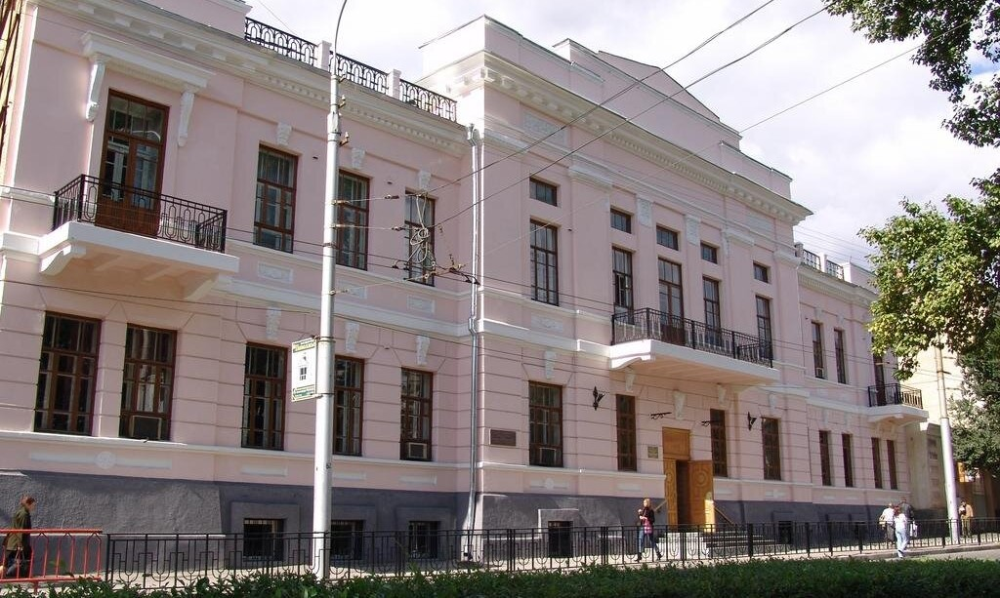
Областной краеведческий музей
Волгоградский областной краеведческий музей — один из старейших музеев региона, основанный 2 (15) ноября 1914 года как Царицынский музей местного края. Идея его создания принадлежала местной интеллигенции и поддерживалась купечеством, которое возлагало большие надежды на просвещенное будущее быстрорастущего города. Первым заведующим стал преподаватель реального училища Петр Павлович Курлин. Изначально музей располагался в двух комнатах Дома науки и искусств, где были представлены палеонтологические, археологические и нумизматические коллекции. Однако его развитие было прервано: в годы Гражданской войны часть экспонатов была разграблена, а во время Сталинградской битвы музей был разрушен, и его коллекции почти полностью погибли. После войны музей дважды восстанавливали практически с нуля, и только в 1954 году он вернулся в Сталинград, а свой нынешний дом обрел в 1986 году.
Сегодня музейное собрание насчитывает более 170 тысяч единиц хранения, среди которых уникальные археологические находки, богатая этнографическая коллекция, нумизматические редкости и предметы быта. Главной архитектурной особенностью музея являются два исторических здания, в которых он располагается: бывшая Царицынская Земская Управа (1916 г.) и Волжско-Камский коммерческий банк (1879 г.). Оба здания — памятники истории и архитектуры конца XIX — начала XX веков регионального значения, выстроенные в стиле эклектики с элементами модерна и восстановленные после Сталинградской битвы.
Адрес: г. Волгоград, проспект им. В.И. Ленина, д. 5а и д. 7
Телефон: +7 (8442) 38-84-39
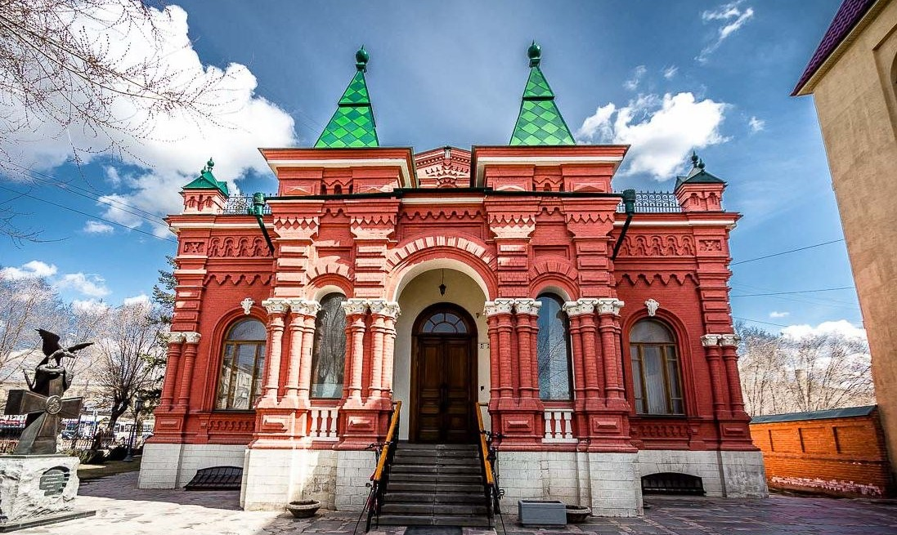
Мемориально-исторический музей
Мемориально-исторический музей — это уникальная возможность погрузиться в бурные события Гражданской войны и увидеть подлинные свидетельства эпохи. Он является частью музея-заповедника «Сталинградская битва» и единственным в Южном федеральном округе, полностью посвященным этой теме. Экспозиция размещается в пяти залах и насчитывает около 1000 экспонатов, включая редкие фотографии, документы, личные вещи командиров, а также внушительную коллекцию холодного и огнестрельного оружия времен Первой мировой и Гражданской войн. Особый интерес у посетителей вызывают 75-мм морская пушка, пулеметная тачанка и детальный макет броневагона.
Музей расположен в бывшем особняке знаменитых царицынских купцов и меценатов Репниковых. Это здание, построенное в 1903 году в «русском стиле» и признанное памятником архитектуры и истории федерального значения, само является ценным экспонатом. В 1918 году здесь размещался штаб обороны Царицынского Совета. Открытый в 1937 году как Музей обороны Царицына, он сильно пострадал в дни Сталинградской битвы, но был восстановлен. Сегодня, помимо постоянной экспозиции, здесь проходят тематические выставки, а у входа установлены памятники героям Первой мировой и Гражданской войн.
Адрес: г. Волгоград, ул. Гоголя, 10
Телефон: +7 (8442) 55-01-51
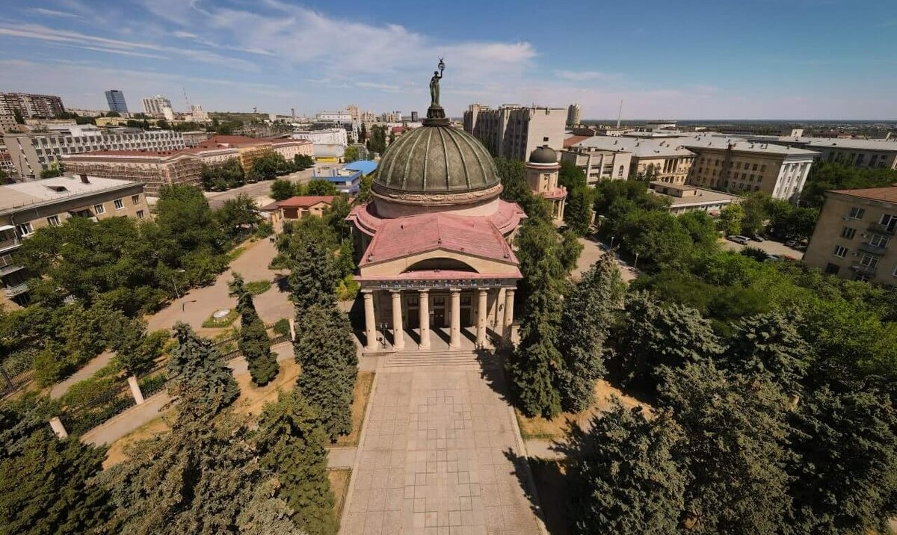
Волгоградский планетарий
Волгоградский планетарий, расположенный на улице Мира, по праву считается одним из красивейших и крупнейших звездных домов России, а также единственным планетарием в Нижнем Поволжье. Его история началась с уникального подарка: здание и оборудование были преподнесены советскому народу трудящимися Германской Демократической Республики в знак стремления к миру и в честь 70-летия И.В. Сталина. Немецкие рабочие собрали на этот проект 1,35 миллиона марок, а само строительство, шедшее ударными темпами, было завершено в 1954 году.
Разработанный изначально немецкими архитекторами проект на месте был полностью переработан выдающимися советскими зодчими В.Н. Симбирцевым и М.А. Хомутовым с учетом местных условий. Торжественно открытый 19 сентября 1954 года, планетарий стал третьим в Советском Союзе после Московского и Киевского. Сегодня это не просто архитектурный шедевр, но и место подготовки первых космонавтов, где бывали Юрий Гагарин и другие покорители космоса.
Здание является блестящим образцом сталинского ампира и объектом культурного наследия. Снаружи особое внимание привлекает массивный полусферический купол диаметром 25 метров, который венчает семиметровая бронзовая скульптура «Мир» — последняя крупная работа знаменитого скульптора Веры Мухиной. Парадный вход оформлен внушительными колоннами, а интерьеры поражают богатством отделки: в фойе установлены 12 колонн из розового мрамора, стены отделаны ценными породами дерева — палисандровым и лимонным. В здании также скрывалась уникальная мозаика с портретом Сталина, собранная из уральских самоцветов; долгие годы она была скрыта под штукатуркой и вновь открыта для посетителей лишь в 1990-е годы.
Адрес: г. Волгоград, ул. Гагарина, 14
Телефон: +7 (8442) 24-18-80
Другие достопримечательности
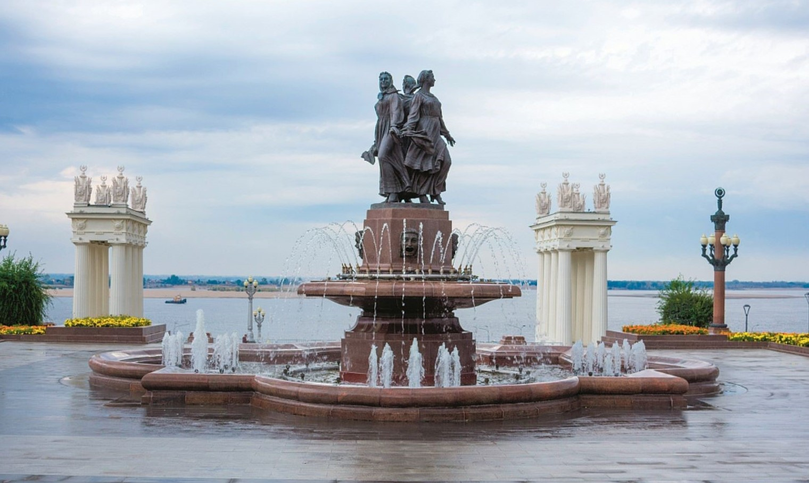
Фонтан «Искусство»
Фонтан «Искусство» - один из символов возрожденного Сталинграда, украшающий верхнюю террасу Центральной набережной. Он был торжественно открыт в 1957 году, став подарком городу от скульптора Сергея Алешина и архитектора Василия Шалашова. Считается, что мастеров на создание этой композиции вдохновили плавные хороводы легендарного ансамбля «Березка». Долгое время сооружение носило имя «Дружба» или «Дружба народов», что отражает его главную идею — единение людей. Спустя десятилетия, после череды неудачных попыток ремонта, в 2019 году была проведена масштабная реконструкция, которая вернула фонтану первоначальный замысел и превратила его в современное светомузыкальное шоу.
Центральным элементом фонтана является скульптурная группа из трех бронзовых девушек в русских народных костюмах, застывших в стремительном танце. Фигуры установлены на внушительном постаменте из красного полированного гранита. Сегодня, благодаря последнему обновлению, фонтан радует зрителей не только мощными водяными каскадами из чаши и верхнего блюда, но и продуманной вечерней иллюминацией: специальные светодиоды подсвечивают скульптуры и фрески, а для каждого дня недели разработано 11 уникальных сценариев работы. В летнее время здесь собираются горожане и туристы, чтобы послушать выступления духового оркестра и насладиться атмосферой праздника в окружении зелени и видов на Волгу.
Адрес: г. Волгоград, пересечение ул. Маршала Чуйкова и Аллеи Героев
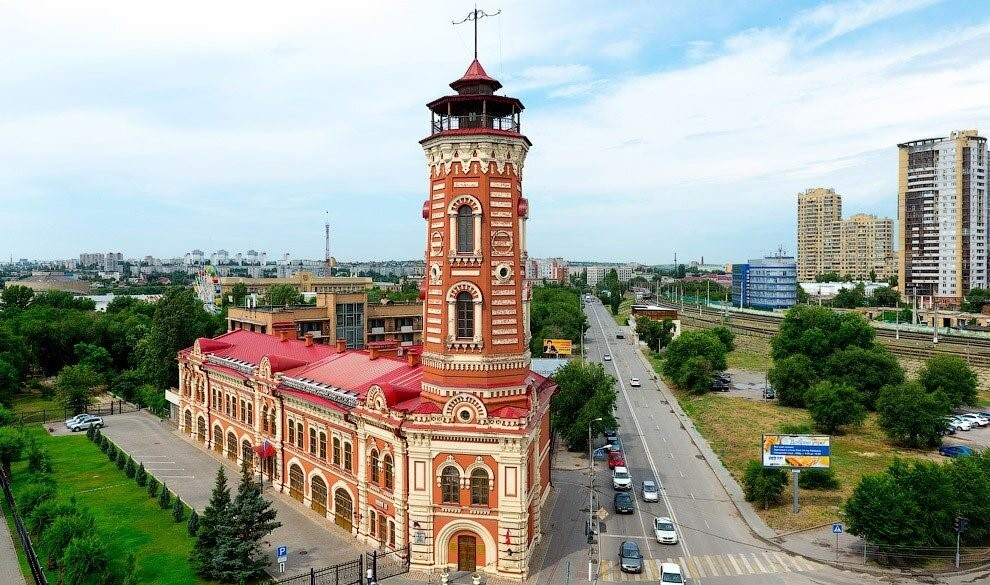
Каланча царицынской пожарной команды
Каланча царицынской пожарной команды — это не просто старинная башня, а признанный символ Волгограда и один из немногих уцелевших памятников архитектуры дореволюционного Царицына. Её история началась в 1891 году, когда городские власти приняли решение о строительстве первой каменной пожарной части для преимущественно деревянного города. Возведённая по проекту брандмейстера Струмбе из Санкт-Петербурга, она распахнула свои двери в августе 1897 года, о чём свидетельствует надпись на фасаде. 40-метровая башня, увенчавшая здание на пересечении улиц Коммунистической и Володарского, мгновенно стала главной архитектурной доминантой и самым высоким сооружением в городе. Примечательно, что это был не просто пожарный пост, а многофункциональный городской центр, где под одной крышей размещались 7 пожарных депо с конюшнями, казарма с шестовым спуском для быстрого выезда, публичная библиотека и даже ломбард. Каланча верой и правдой служила городу до начала 1930-х годов, когда её разобрали по соображениям безопасности — как потенциальный ориентир для артиллерийского огня. Долгое время здание стояло обезглавленным, пока в 1995 году, в канун 100-летнего юбилея, не было полностью восстановлено в своём историческом облике по архивным чертежам и фотографиям.
С архитектурной точки зрения каланча — это яркий образец русского стиля, построенный из традиционного царицынского керамического кирпича с характерной тычковой кладкой. Её фасады, украшенные рустовкой, художественными карнизами и ажурной лепниной, придают зданию неповторимый облик. Но главная особенность, скрытая от беглого взгляда, — это уникальный компилятивный герб на фасаде, который объединяет символику Саратовской губернии и уездного Царицына. Это единственный известный пример такого геральдического «союза» в городе. Сегодня в стенах этого возрождённого памятника архитектуры размещаются различные ведомства, но его исторический облик продолжает украшать город, напоминая о богатом прошлом Царицына.
Адрес: г. Волгоград, ул. Коммунистическая, 5
Телефон для заказа экскурсий: +7 (937) 534-33-00.
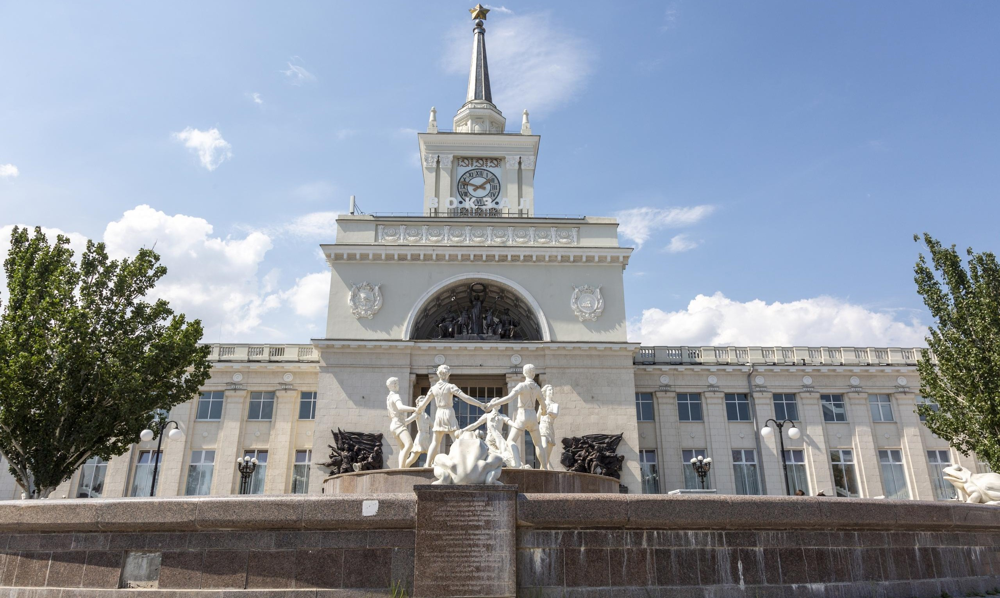
Здание железнодорожного вокзала
Здание железнодорожного вокзала «Волгоград-1» — это не просто главные транспортные ворота города, но и величественный памятник архитектуры послевоенного возрождения. Его история началась ещё в 1862 году со скромной деревянной станции на Волго-Донской железной дороге. В 1871 году было построено первое капитальное кирпичное здание, неоднократно перестраивавшееся и приобретшее окончательный величественный довоенный облик к началу 1930-х годов. В дни Сталинградской битвы здание стало ареной ожесточённых боёв и было полностью разрушено к сентябрю 1942 года. Восстанавливать руины не стали, и в 1951–1954 годах на их месте по проекту архитекторов Александра Куровского и Самуила Брискина был возведён новый вокзал, торжественно открытый 2 июня 1954 года. В 1997 году здание получило статус памятника архитектуры регионального значения, а после теракта 2013 года его исторический облик был полностью воссоздан в ходе восстановительных работ.
Архитектура вокзала — яркий и один из лучших в стране образцов стиля «сталинский ампир». Трёхэтажное здание с цокольным этажом венчает монументальная башня с остроконечным шпилем, чья общая высота достигает 67 метров. Фасады облицованы гранитом и светлым инкерманским камнем, а в интерьерах использован мрамор и богатая лепнина. Главные украшения: барельефы ордена Красного Знамени и медали «За оборону Сталинграда», скульптурная композиция «Апофеоз труда» на фронтоне, а также художественные росписи потолков, посвящённые героике войны и мирного труда. Особой деталью служат часы на башне, установленные в 1959 году, с диаметром циферблата 4 метра и длиной стрелок 2,5 метра. Перед вокзалом находится точная копия знаменитого фонтана «Детский хоровод», ставшего одним из символов военного Сталинграда благодаря фотографии Эммануила Евзерихина.
Адрес: г. Волгоград, Привокзальная пл., 1
Телефон: 8 (800) 775-00-00
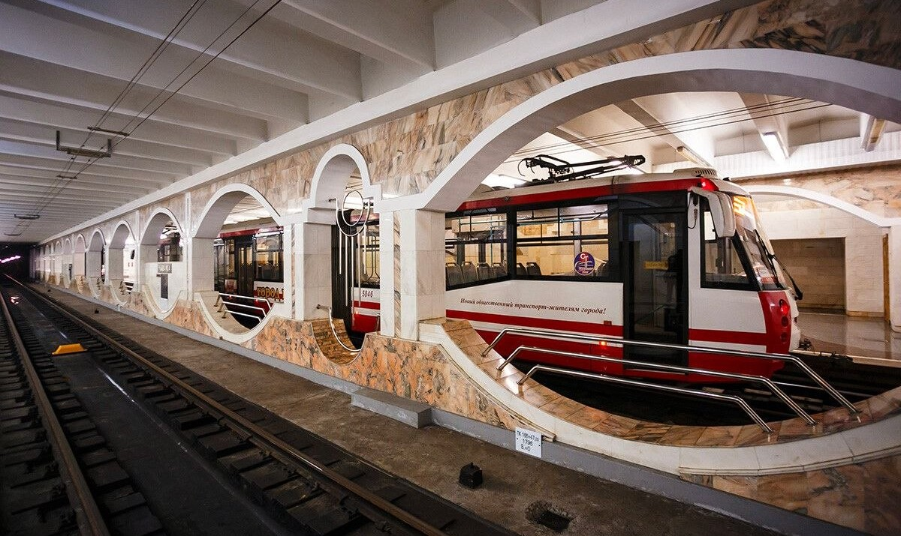
Волгоградский метротрам
Волгоградский метротрам - уникальная транспортная система, не имеющая аналогов в России и сочетающая в себе черты классического трамвая и подземного метрополитена. Его история началась в конце 1960-х годов, когда стремительно растущему и сильно вытянутому вдоль Волги городу потребовался новый вид скоростного транспорта. Поскольку по существовавшим нормативам Волгоград не достиг тогда миллиона жителей, необходимого для строительства полноценного метро, было принято компромиссное решение - проложить усовершенствованную трамвайную линию. Строительство наземных участков стартовало в 1970 году, а через шесть лет началась проходка подземных тоннелей. Работы осложнялись опасными находками - строителям то и дело попадались неразорвавшиеся мины и снаряды времен Сталинградской битвы. Торжественное открытие пассажирского движения на первой очереди состоялось 5 ноября 1984 года.
Главная особенность метротрама - его комбинированная архитектура. Из 17,3 километра общей протяженности линии 7 километров проложены под землей в тоннелях, спроектированных по всем нормам метрополитена. На маршруте расположено 22 станции, пять из которых - подземные, построенные открытым способом на глубине от 5 до 14 метров. Особого внимания заслуживает эстакадная станция «Пионерская», которая находится на мосту, а автомобильная дорога проходит практически над ней, прямо по «потолку» станции.
Адрес: г. Волгоград, ул. Советская, д. 47б (МУП «Метроэлектротранс»)
Телефон: +7 (8442) 23-25-01
География и транспорт
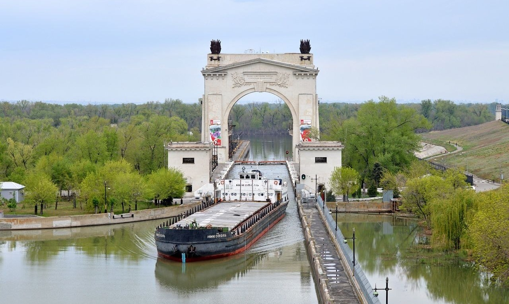
Волго-Донской канал
Волго-Донской судоходный канал имени В.И. Ленина — это не просто водная магистраль, а одно из самых грандиозных гидротехнических сооружений XX века, настоящая легендарная стройка. Его история уходит корнями в далекое прошлое: ещё в XVI веке турецкий султан Селим II, а позже и Пётр I предпринимали попытки прорыть канал между двумя великими реками, но обе они окончились неудачей. Лишь в советское время мечта стала реальностью: строительство началось в 1948 году и было завершено в рекордно короткие сроки — всего за 3,5 года. Торжественное открытие канала состоялось 27 июля 1952 года. Трасса канала протяженностью 101 километр, берущая начало в Красноармейском районе Волгограда, соединила Волгу и Дон в районе города Калача-на-Дону.
Главная особенность канала — его уникальная архитектура и инженерная сложность. Это единый ансамбль, решенный в стиле «сталинского ампира». На канале возведено 96 гидротехнических сооружений, среди которых 13 судоходных шлюзов, три насосные станции и три водохранилища. «Воротами» в канал со стороны Волги служит величественная 40-метровая триумфальная арка первого шлюза — признанный шедевр архитектуры. Особенностью волжского склона является так называемая «Чапурниковская лестница»: на участке длиной 9 км суда с помощью шести шлюзов поднимаются на высоту 50 метров. Наполнение канала водой — сложнейшая инженерная задача, решенная с помощью трех мощных насосных станций, подающих донскую воду на водораздел, откуда она самотеком распределяется по обеим «лестницам» шлюзов. Доминантой ансамбля является и расположенный у входа в канал памятник В.И. Ленину — самый большой в мире монумент реально жившему человеку, занесенный в Книгу рекордов Гиннесса.
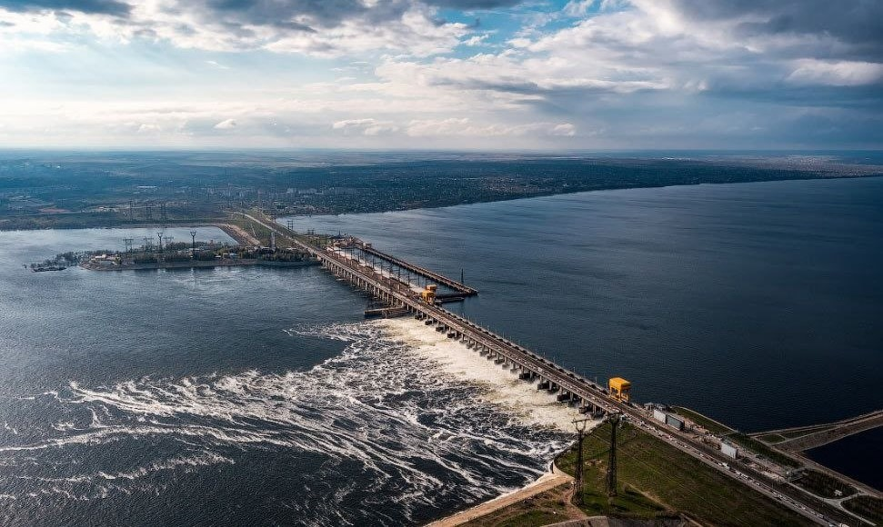
Волжская ГЭС
Волжская ГЭС (ранее Сталинградская/Волжская ГЭС им. XXII съезда КПСС) - это не просто крупнейшая гидроэлектростанция в европейской части России, но и настоящий символ послевоенного возрождения страны. Расположенная в нижнем течении Волги, она соединяет два города — Волгоград и Волжский, а ее плотина образует Волгоградское водохранилище протяженностью более 400 км. Станция сыграла ключевую роль в электрификации центральных, западных и южных регионов России, а также в развитии судоходства и орошения засушливых земель Заволжья.
История этого грандиозного сооружения началась задолго до его постройки. Первые планы по возведению гидроузла на Волге разрабатывались еще в рамках плана ГОЭЛРО в 1920-е годы. Однако, активная фаза строительства стартовала лишь в 1950 году после подписания исторического постановления И.В. Сталиным. Стройка, объявленная всесоюзной, велась ударными темпами в еще не до конца восстановленном после войны Сталинграде. В рекордно короткие сроки была перекрыта Волга, и уже в декабре 1958 года заработали первые гидроагрегаты. Полностью строительство было завершено в 1961 году, когда станция была принята государственной комиссией в постоянную эксплуатацию. Рядом со стройкой вырос поселок гидростроителей, ставший сегодня вторым по величине городом области — Волжским.
Волжская ГЭС по праву считается инновационной. Это первая в мировой практике станция, возведенная на нескальных основаниях. В ходе строительства впервые в СССР применили сборные железобетонные конструкции, а для доставки грузов на высоте 40 метров возвели уникальную подвесную канатную дорогу. Именно здесь впервые в мире было получено напряжение в 500 кВ. Сегодня установленная мощность ГЭС составляет 2671 МВт. Интересный факт: Вечный огонь на площади Павших Борцов в Волгограде в 1963 году был зажжен именно от искры Волжской ГЭС.
Адрес:г. Волжский пр. Ленина, д. 1а
Телефон: +7 (8443) 42-03-59
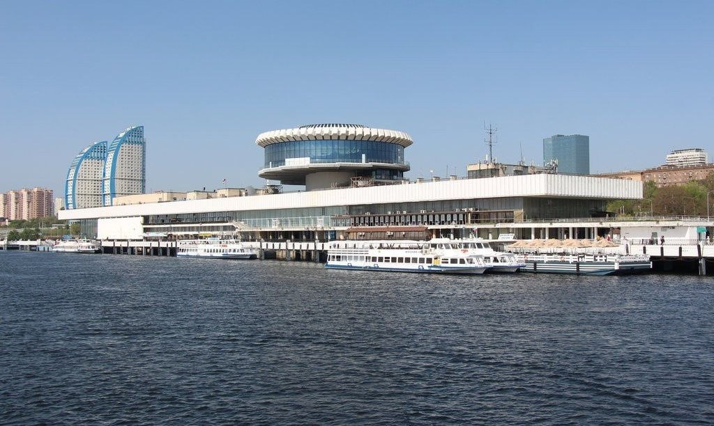
Речной вокзал
Речной вокзал Волгограда - это не просто транспортный узел, а один из главных архитектурных символов города, парадные «речные ворота», встречающие прибывающих по Волге гостей. Его история началась с открытия навигации на Волге и активного развития пассажирского судоходства. Современное здание, которое мы видим сегодня, было построено в последние советские десятилетия и торжественно введено в эксплуатацию в 1989 году. Оно заменило собой более старое и скромное сооружение, ставшее тесным для стремительно развивающегося города-героя. На момент постройки волгоградский речной вокзал являлся самым большим в Европе по площади и пассажировместимости, что подчеркивало статус города как крупнейшего порта на Волге.
Главная архитектурная особенность здания - его футуристичный и одновременно монументальный облик, напоминающий огромный белоснежный теплоход, рассекающий волны. Длина сооружения почти равна длине Красной площади в Москве и составляет около 296 метров. Здание имеет форму вытянутой буквы «П», обрамляя просторную причальную площадь. Внутри находились просторные залы ожидания, способные вместить тысячи пассажиров, а также ресторан, кафе и билетные кассы. Сейчас, к сожалению, комплекс переживает не лучшие времена, но его мощный архитектурный образ по-прежнему остается одним из самых узнаваемых в панораме Центральной набережной, а причалы продолжают принимать круизные теплоходы.
Адрес: г. Волгоград, Набережная 62-й Армии, 6
Телефон: +7 (8442) 23-45-66
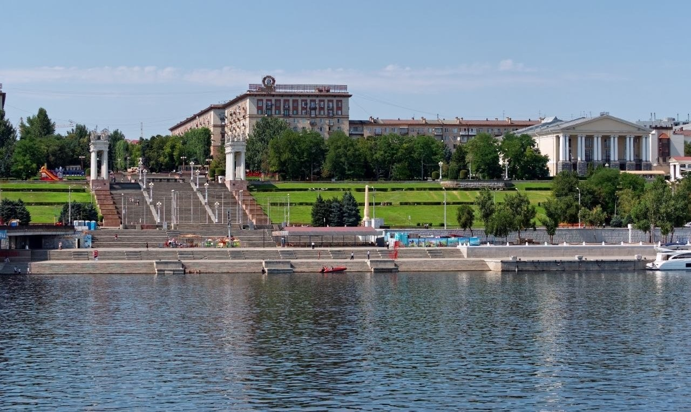
Центральная набережная
Центральная набережная Волгограда, носящая имя 62-й армии, — это величественный архитектурный ансамбль и любимое место отдыха горожан. Её история началась в конце XIX века, когда с развитием пароходного движения на Волге здесь появились пристани и деревянные лестницы. В 1930-е годы набережную благоустроили, и она считалась лучшей на Волге, но была полностью разрушена во время Сталинградской битвы. После войны её восстановили по проекту архитектора Василия Симбирцева, и в 1952 году она открылась как парадный вход в город со стороны реки.
Архитектурной доминантой набережной является центральная гранитная лестница шириной 40 метров, которая насчитывает 100 ступеней и 8 смотровых площадок. Её венчают белоснежные восьмиколонные пропилеи — своеобразные «парадные ворота» города, напоминающие своим обликом Московские ворота в Санкт-Петербурге. На верхней террасе, которая примыкает к жилым кварталам, разбит живописный Парк Победы, установлен знаменитый фонтан «Искусство», а о героическом прошлом напоминает ротонда на месте бывшей зенитной батареи. Нижняя терраса, протянувшаяся у кромки воды, служит главным прогулочным маршрутом, где расположены памятники, кафе и открытая концертная площадка.
Адрес: г. Волгоград, Набережная 62-й Армии
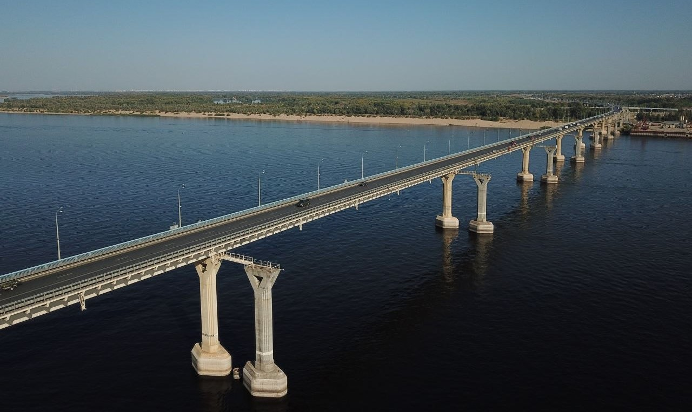
«Танцующий» мост
Танцующий мост (официально - Волгоградский мост) - это автодорожный мост через Волгу, получивший мировую известность благодаря уникальному инциденту. Его строительство, начавшееся в 1996 году, стало одним из самых известных долгостроев России. Торжественное открытие этого сложнейшего внеклассного моста состоялось 10 октября 2009 года. Однако настоящая слава пришла к нему 20 мая 2010 года, когда из-за сильного ветра мост вошёл в резонанс, и его пролёты начали совершать вертикальные колебания с амплитудой до 35 см.
Инцидент, зафиксированный на видео и мгновенно облетевший интернет, дал мосту народное название «танцующий». Для решения проблемы, после серии исследований и испытаний, было найдено уникальное инженерное решение: на трёх самых длинных пролётах были установлены массивные демпферы весом по 20 тонн каждый. Волгоградский мост стал единственным в мире балочным мостом, оснащённым такими «гирями», что полностью исключило возможность повторения «танцев» и обеспечило его безопасную эксплуатацию.
Адрес: г. Волгоград, мостовой переход через р. Волгу
Телефон: +7 (8442) 72-69-25